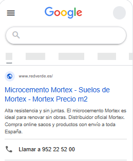
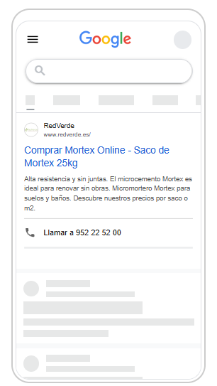
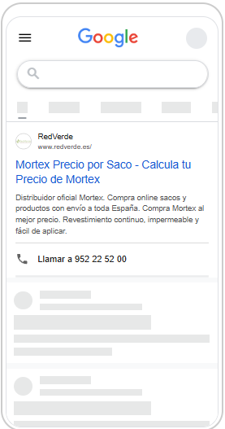
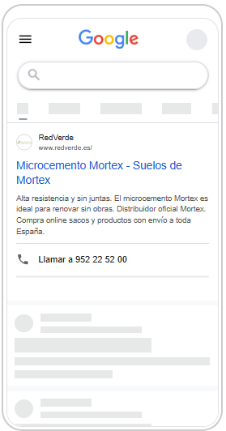
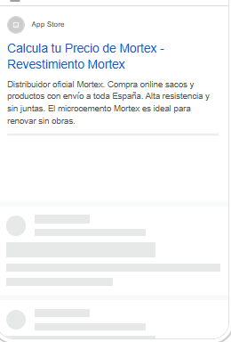
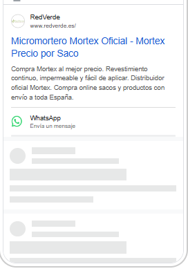
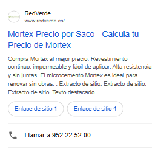

Este es el resumen de los primeros 9 días de campaña, contado sin tecnicismos: qué han hecho tus anuncios, cuánta gente ha entrado en la web, cuántos han contactado y qué esperamos para lo que queda de julio.
En resumen: la campaña ya está en marcha, aparece ante gente que busca justo tu producto y ya ha traído los dos primeros contactos. Ahora toca ganar volumen. Todo lo de abajo explica estos cuatro números con detalle.
Esto es lo que ve una persona en su móvil cuando busca «mortex», «microcemento» o «revestimiento continuo». Google va combinando distintos titulares y muestra en cada búsqueda la versión que cree que funcionará mejor.







El teléfono (952 22 52 00), el botón de WhatsApp y los enlaces extra son añadidos gratuitos que dan más formas de contacto directo. Cuantas más ofrezcamos, más fácil se lo ponemos a quien te encuentra.
No todo el que ve el anuncio entra, y no todo el que entra deja sus datos. Es normal — así se estrecha el «embudo» en cualquier campaña. Estos son tus números reales:
Un 8 % de los que entran acaban contactando: es una cifra sana. El reto no está en convencer —está en traer más visitas, porque con solo 25 los números todavía se mueven mucho.
Cuántas veces se mostró tu anuncio cada día. Cogió fuerza el fin de semana del 4 al 6 de julio y luego bajó de visibilidad — algo que vamos a revisar para que no vuelva a caer.
Antes de empezar estimamos un coste por visita. La realidad ha salido más cara — y tiene una explicación sencilla.
Cada visita cuesta 3,3 veces más de lo previsto. Y aun así, merece la pena.
El estudio previo estimaba entre 0,21 € y 1,03 € por visita; la realidad es 2,04 €. El motivo: «Mortex» es una marca que también venden otros distribuidores, así que todos pujamos por el mismo cliente y eso sube el precio. La parte buena es que quien busca «mortex precio» es alguien muy interesado y muy cercano a comprar: por eso ya han salido 2 contactos con muy pocas visitas.
Si la campaña mantiene el ritmo actual y el presupuesto de ~200 € al mes, esto es lo que esperamos ver a 31 de julio. Es una estimación con solo 9 días de datos, así que la damos como una horquilla, no como una cifra exacta.
Traducido: por unos 200 € esperamos cerrar julio con cerca de un centenar de visitas y entre 7 y 9 personas interesadas dejando sus datos.
La nueva página de destino no trae más visitas: consigue que más visitas de las que ya llegan dejen sus datos. Mismo gasto, más contactos.
Contactos al mes con la misma inversión. Si funciona, cada contacto pasaría de costar unos 25 € a rondar los 17 €.
Hoy casi todo lo que compramos lleva la palabra «Mortex». Vamos a probar también búsquedas de producto —microcemento, revestimiento continuo— para no depender de una sola marca y bajar el coste.
El anuncio se mostró menos en los últimos días. Revisamos pujas y presupuesto para que vuelva a aparecer de forma constante durante todo el mes.
Es la palanca con más recorrido: más contactos por el mismo dinero. Una vez publicada, Google necesita ~2 semanas de rodaje sin cambios para aprender qué funciona.